Welcome To Channak Organic Farm
Our Organic Farm
Welcome to Channak's Family Farm Website. In 2015, our family moved from Phnom Penh to Tbong Khmum province, where we started the idea of establishing an organic farm. Many people today face health problems, especially when it comes to eating foods that contain chemicals. Our family is no different, because eating our chemically treated vegetables and fruits takes a lot of time in the hospital. This is why we started this organic farm so that we can have safe food so that we can get healthy. And we can help people understand the importance of starting a natural vegetable garden in their home so they can have safe food to eat every day. In our organic farm we have tour that people can come and see our farm and they can learn how they can start their own organic garden in their home. In our farm have shop that we can buy organic vegetables and fruits that we grow without using chemicals. Have many people come to visit our farm every day and they are so happy because they can learn how to grow safely vegetables and fruit and they can buy good product that they can eat now for get healthy before their vegetables that they grow can eat.
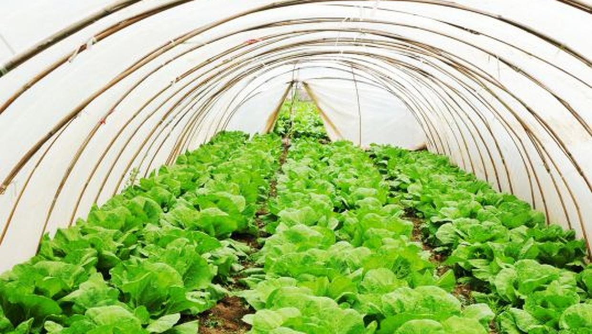Fruit & Vegetables

 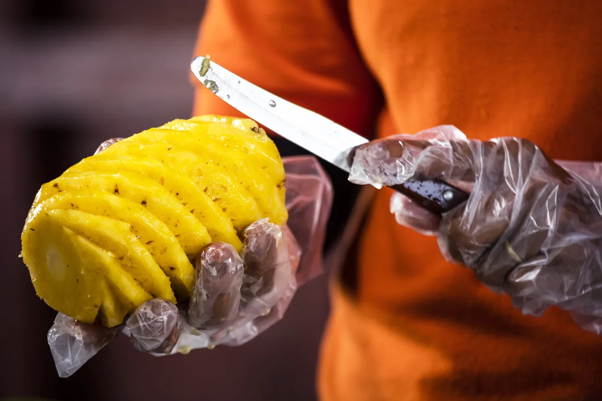
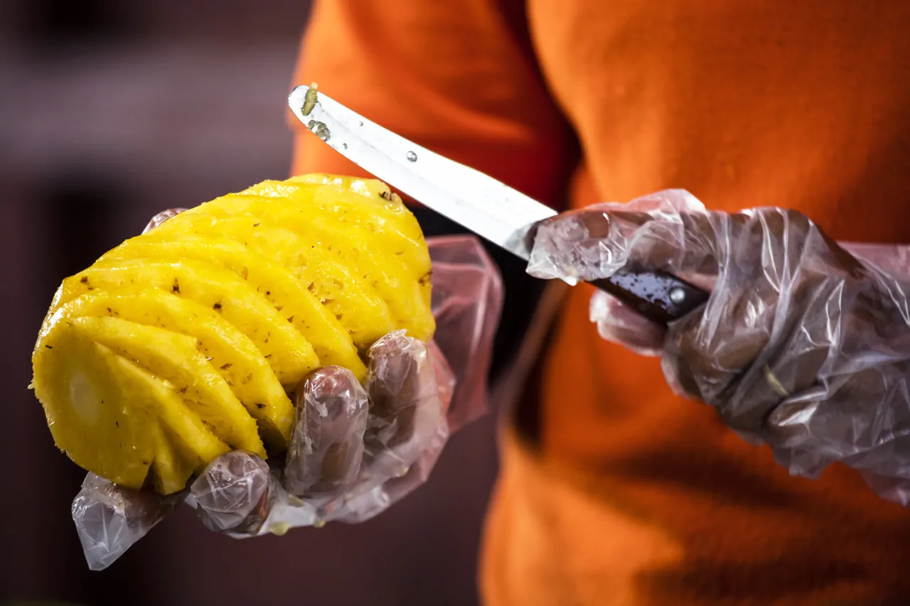

 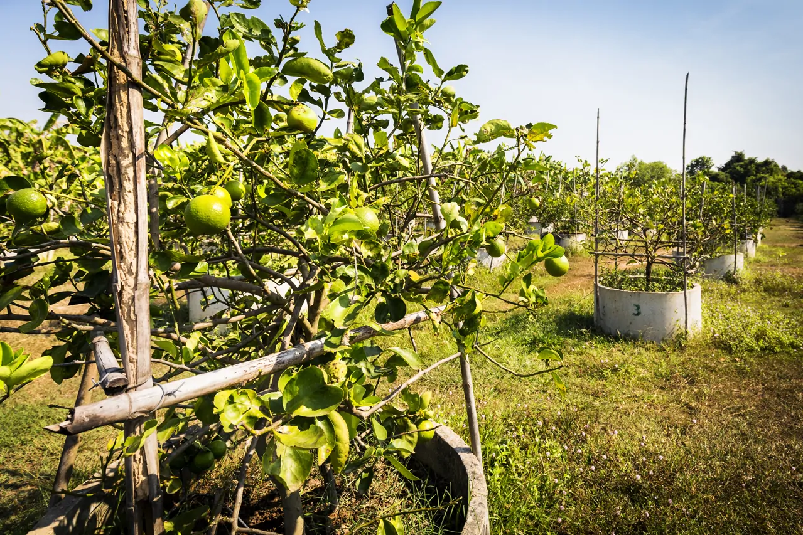
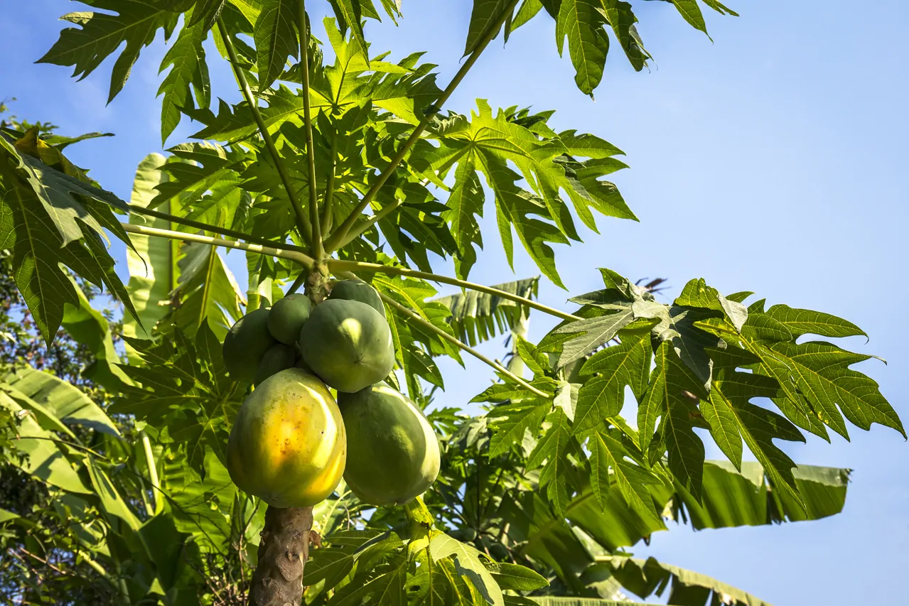
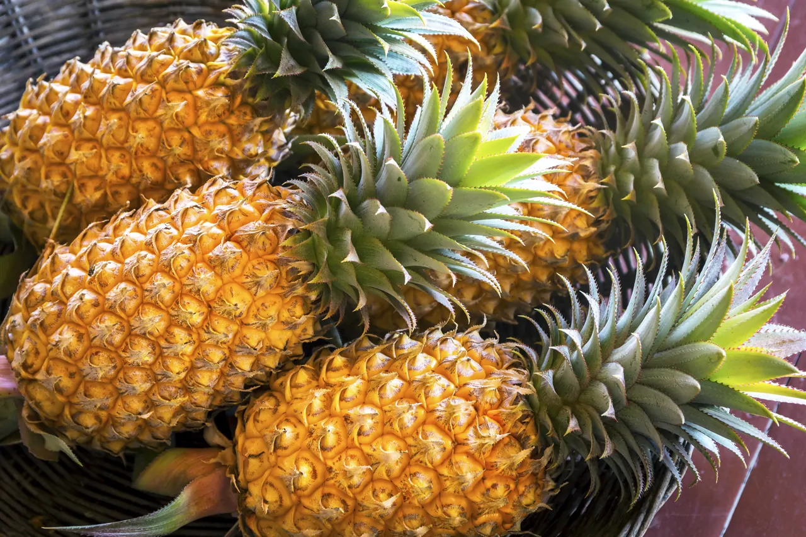
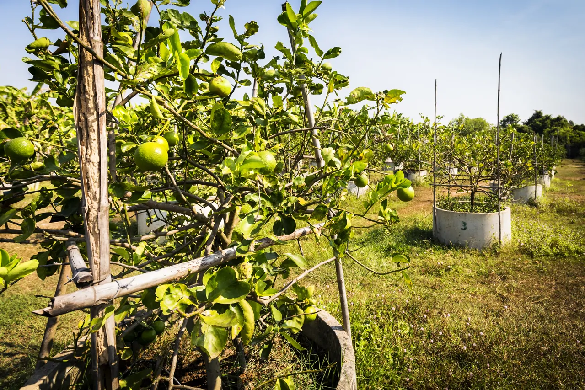
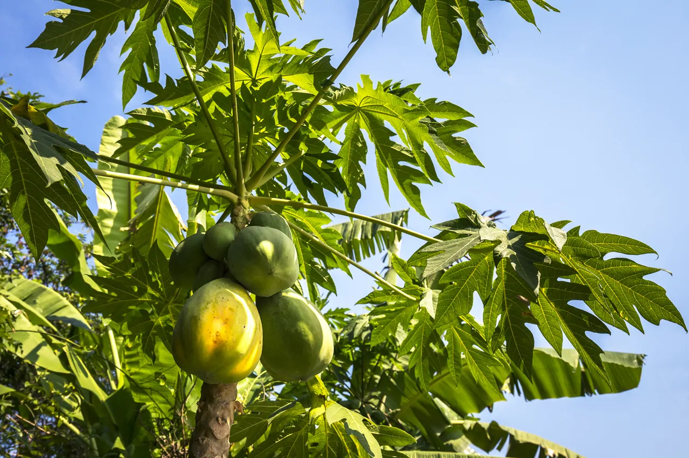
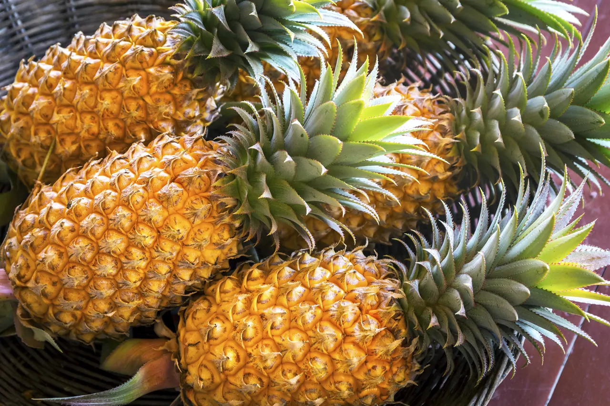

 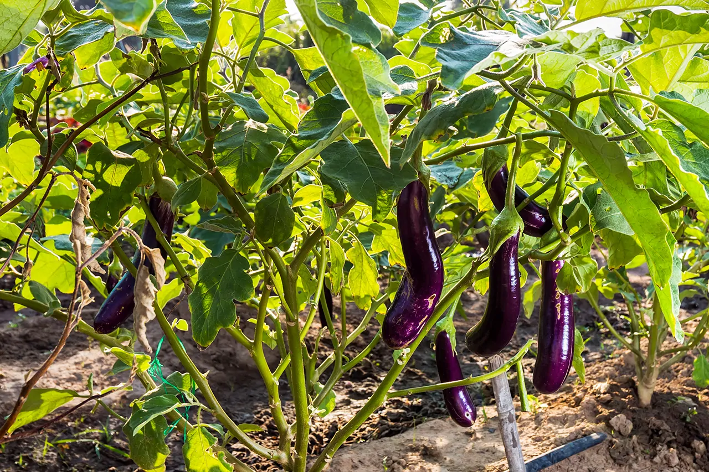
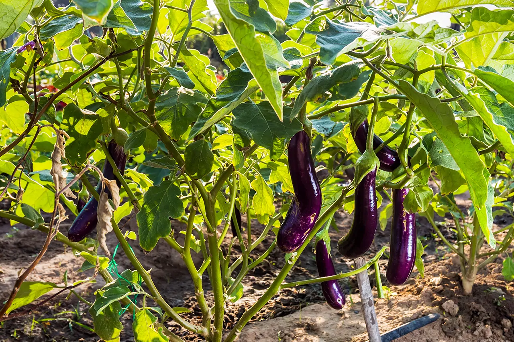